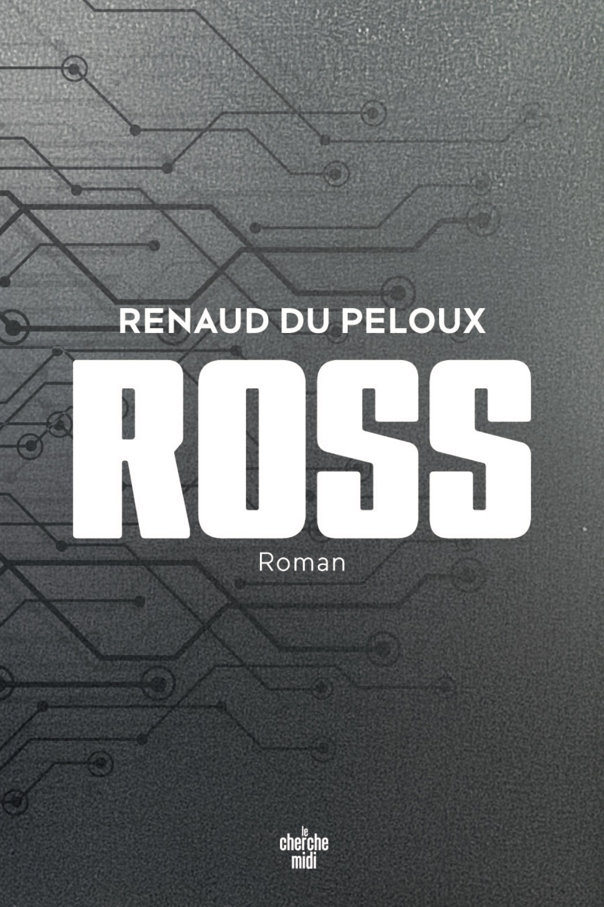

Renaud du Peloux
Romancier
Ross

Silk Road était un site web clandestin, surnommé "l'Amazon de la drogue". Il mettait en relation acheteurs et vendeurs de drogues. Avant d'être saisi par le FBI en 2013, Silk Road a concentré une bonne partie du trafic de drogues de la planète.
Derrière le site se cachait un entrepreneur de vingt-six ans. Libertarien, timide, sensible. Une sorte de Docteur Frankenstein des temps modernes. Ce livre est son histoire.